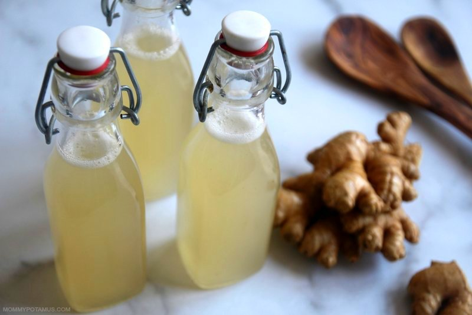

Ginger Beer

Description
Ginger Beer is a femented fizzy drink made of only a few ingredients and some patience.
Ingredients:
Ginger bug:
- 2 cups of filtered water
- 22g of grated ginger
- 28g of sugar
Ginger bug feeding:
- 22g of grated ginger
- 28g of sugar
Ginger Beer:
- 2 quarts of filtered water
- 273g of sugar
- 54g of grated ginger
- 110g of strained ginger bug liquid
Steps:
- Mix ginger bug ingredients and let sit for 24 hours.
- Add ginger bug feeding every 24 hours until the bug becomes fizzy.
- Once ginger bug is fizzy add ginger beer ingredients without the ginger bug liquid in to a pot and bring to a boil, then let rest for 5-8 min.
- Once the hot liquid is cooled add 110g of strained ginger bug liguid into the mix.
- pour into flip bottle tops and leave them at room temperature for 3-6 days or untill fizzy.
- Enjoy!!